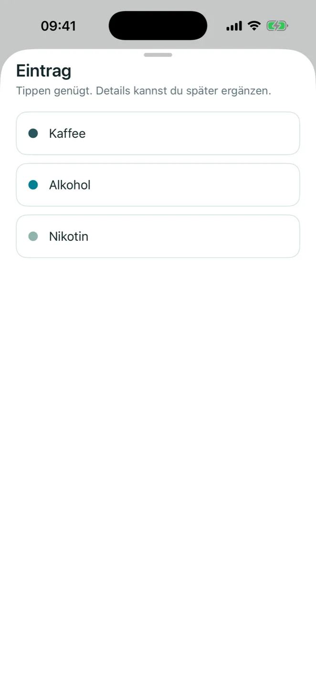
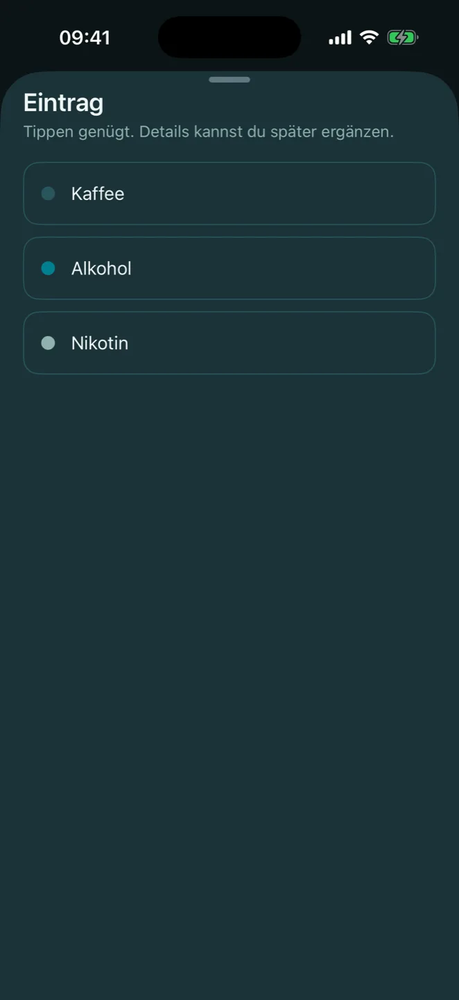
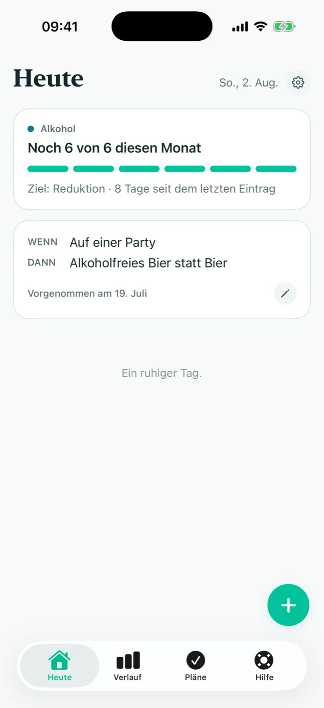
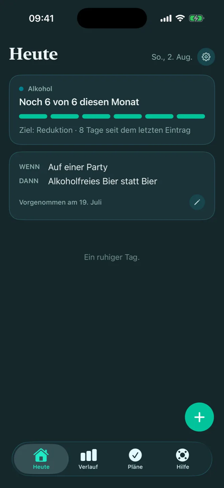
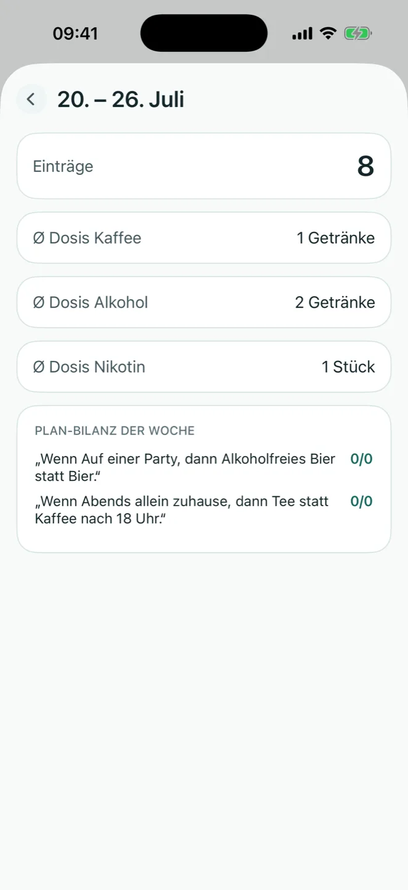
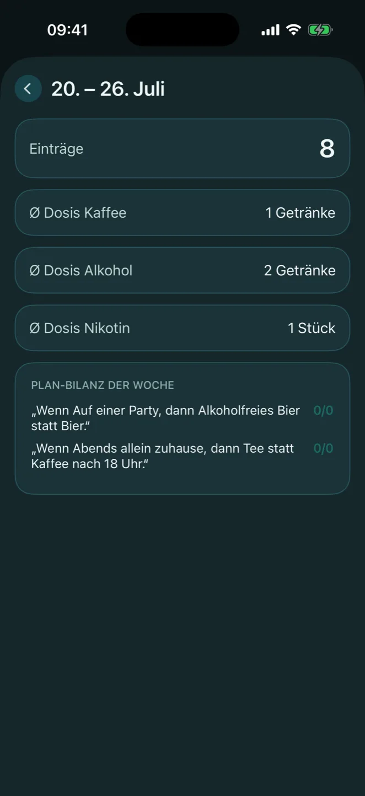
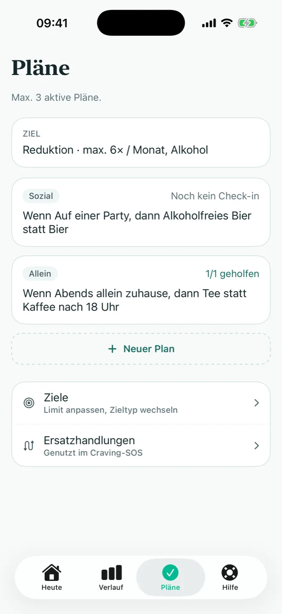
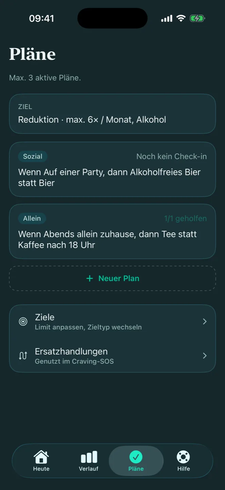

SCHRITT 01
Erfassen
Zwei Taps: Substanz, Menge. Der Zeitpunkt kommt von selbst, der Rest ist optional. Dauert das Erfassen zu lange, wird es unvollständig, und dann trägt es nichts.


EN — English version in preparation. This page is currently German only.
Eine iOS-App für Menschen, die ihren Substanzkonsum reduzieren wollen, ohne dafür aufhören zu müssen.
Alles bleibt auf dem Gerät. Kein Konto, kein Server.


Zwei Taps: Substanz, Menge. Der Zeitpunkt kommt von selbst, der Rest ist optional. Dauert das Erfassen zu lange, wird es unvollständig, und dann trägt es nichts.


Einmal pro Woche ein sachlicher Blick zurück: Häufigkeit, Mengen, wiederkehrende Situationen. Bezugsgröße ist der eigene Verlauf, nicht der Durchschnitt anderer.


Vorsätze, die an eine Situation gebunden sind: Wenn Freitagabend die Runde beginnt, dann bleibe ich beim ersten Getränk. Pläne in dieser Form gehören zu den am besten untersuchten Werkzeugen der Selbstregulation.


Keine Verarbeitung außerhalb des Geräts, und keine Funktion, die sich nachträglich zu einer Übertragung ausbauen ließe. Wer den eigenen Konsum ehrlich dokumentiert, legt etwas offen, das anderswo Konsequenzen hat.
Keine Registrierung, keine E-Mail-Adresse. Es existiert kein Konto, das sich zuordnen ließe.
Keine Cloud, keine Analytics, keine Drittanbieter-SDKs. Es gibt keinen Netzwerkpfad, über den Einträge das Gerät verlassen könnten.
Optionale Sperre beim Öffnen. Wer das Gerät kurz aus der Hand gibt, gibt die Einträge nicht mit.
Diese Website folgt demselben Prinzip: keine Cookies, kein Tracking, keine externen Skripte.
Der Zuschnitt folgt einem Literatur-Review, nicht einer Feature-Liste. Drei Befunde haben die Entscheidungen getragen.
Reines Protokollieren verändert Konsum kaum.
Jede Erfassung mündet in eine Rückmeldung. Ein Eintrag ohne Auswertung wäre Buchhaltung.
Konkrete Wenn-Dann-Pläne gehören zu den robustesten Befunden der Selbstregulationsforschung.
Sie sind ein Kernfeature, direkt aus dem Rückblick anlegbar.
Vergleiche mit dem Durchschnitt anderer können nach hinten losgehen.
Klar misst am eigenen Verlauf. Keine Normwerte, keine Rangliste.
Bei akuter gesundheitlicher Gefahr. Rund um die Uhr.
01806 313031, täglich erreichbar, anonym.
Information und Selbsttests der BZgA.